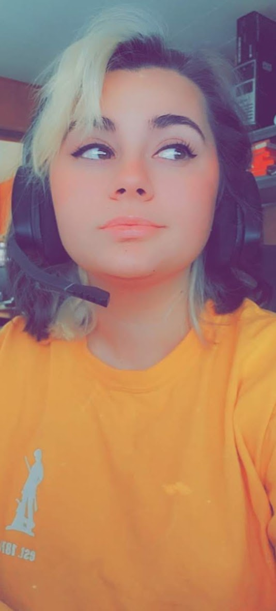

I am from a small town but have big dreams. I am a young mom, but very blessed with my little one. We like to play with trains and watch shows together.
I am a total nerd and geek. THERE IS A DIFFERENCE. I have several years of experience working on computers starting when I would help with them in my middle school years,
to getting my first and only job I've had at a local computer shop in my first year of highschool. It is such a great experience to work with others that are passionate
about the same topics and hobbies as yourself. I am into anime and for a while was actually a web comic artist, so I do have digital art under my belt to help with development
of programs. I am also a musician. Music is what makes my soul thrive. I play many instruments, but my favorite is the guitar (electric and acoustic). I love to sing and have
actually had a few of my own gigs. Despite all of this, I know that my career is in the technology field. I've built a few hundred costum computers for customers and am great at
laptop disassembly. I know the ins and outs of hardware, and my knowledge is going further into learning what software is behind it to make it all work
My ultimate goal either at the end of this course, or when I get more excelled and fluent with my skills, is to develop an interactive, 3D, realistic program model of a
steam locomotive for my son. He is a huge fan of trains and of me. If I am doing this course and career for the sole purpose of skills under my belt, and not for supporting my son
and giving him the best life with what I got, then what is the point. He is my pride and joy, and I hope to make him proud. I would also like to develop games and websites that are
that meet needs, make life a little easier, and for the fun of it! Technology is the way our world is going, and I will not be left behind.
